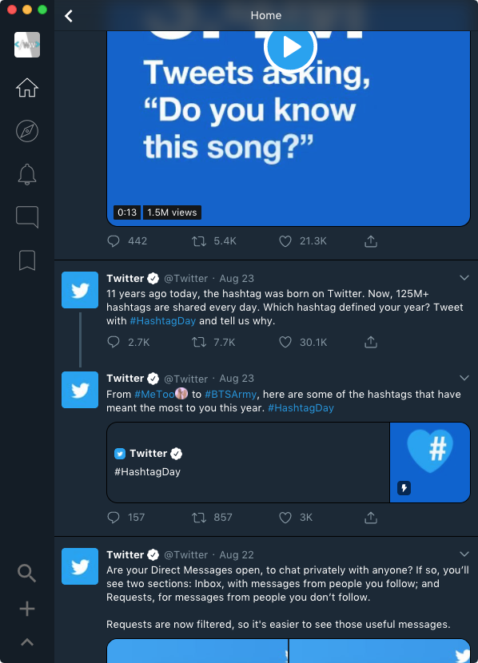

Download for macOS
Test Beta Builds
Download for macOS
Test Beta Builds
(requires 10.9+)
Touchbar Support
|
Familiar from the ground up.Bridgeport was designed after (and in fact, based on the same mobile core) as the discontinued macOS Twitter app. As a former user of this software myself, I saw a lack of suitable end user focused replacements. |
 |

|
Twitter for the rest of us.Other clients focus on professional features. But at it's core, Bridgeport focuses on providing the same experience you're already familiar with on your phone enhanced to the desktop. |
Integrated into macOSThe way that Bridgeport windows integrate into macOS is a top priority for me. Using familiar system design schemes; Bridgeport feels right at home in macOS, and right at home on your computer. |

|
Full featured multi-window desktop appThings like composing new tweets don't interrupt what you're doing in the main window. That way you don't have to break from what you're doing to fire off a quick thought. The new tweet window is able to be summoned from anywhere when Bridgeport is running so you can share thoughts whenever you have them. |
Want to test beta versions and provide feedback? Join the Telegram Group
Don't have Telegram? You should change that.
Donate